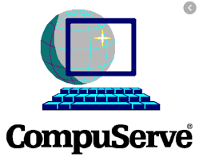
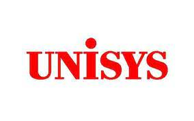

CompuServeDe GIF-bestandsindeling is geïntroduceerd in 1987 door CompuServe.[2] Vanaf dat moment kwam GIF in algemeen gebruik op het internet vanwege de brede steun en draagbaarheid. GIF werd populair omdat het LZW-compressie gebruikte, welke efficiënter was dan andere compressietechnieken. Hierdoor konden veel afbeeldingen gedownload worden bij een redelijke snelheid, zelfs met langzamere modems. Bij de sterke opkomst van het internet eind jaren 90, begin jaren 00 kwam de bestandsindeling in veel bewegende afbeeldingen op websites voor, maar sindsdien is de populariteit aan het afnemen, omdat er betere alternatieven beschikbaar zijn. Een andere reden is dat bewegende afbeeldingen op websites door veel bezoekers als storend ervaren worden. |
 |
87aDe oorspronkelijke versie van het GIF-formaat was 87a. In 1989 kwam CompuServe met een verbeterde versie, genaamd 89a.[3] Deze versie had ondersteuning voor animatievertraging, transparante achtergrondkleuren, specifieke metagegevens en tekstvakken die niet in de afbeelding zelf werden opgeslagen. De twee versies kunnen herkend worden door te kijken naar de eerste 6 bytes van het bestand. Vertaald naar ASCII leest men "GIF87a" of "GIF89a". |

|
SVGVoor de compressie wordt gebruikgemaakt van de LZW-techniek. Unisys had hier een octrooi op, en begon begin jaren 90 betalingen te vragen aan makers van beeldbewerkingsapplicaties en -bibliotheken voor het ondersteunen van het GIF-formaat. Als reactie hierop werden er rechtenvrije alternatieven ontwikkeld zoals ungif (dat het GIF-formaat gebruikt maar zonder compressie) en PNG. Inmiddels zijn de octrooien van Unisys op LZW verlopen: in de Verenigde Staten (No. 4,558,302) op 20 juni 2003; in het Verenigd Koninkrijk, Frankrijk, Duitsland en Italië op 18 juni 2004; in Japan op 20 juni 2004; in Canada op 7 juli 2004. Volgens een onderzoek van de Free Software Foundation is het laatste relevante octrooi (van IBM) verlopen op 11 augustus 2006. |
 |